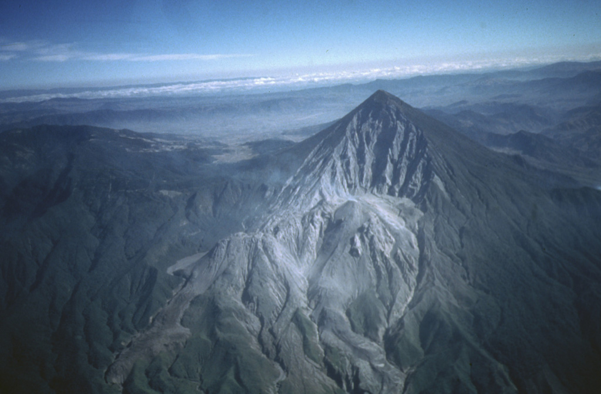

Top 4. Santa Maria (1902)

Description
Santa María Volcano is a large active volcano in the western highlands of Guatemala, in the Quetzaltenango Department near the city of Quetzaltenango. It is part of the mountain range of the Sierra Madre.
The volcano was known as Gagxanul in the local Kʼicheʼ language, which means "Naked Volcano or Mountain", before the 16th century Spanish conquest of the region.
The VEI-6 eruption of Santa María Volcano in 1902 was one of the three largest eruptions of the 20th century, after the 1912 Novarupta and 1991 Mount Pinatubo eruptions. It is also one of the five biggest eruptions of the past 200 (and most likely 300) years.
Geological History
Santa María Volcano is part of the Sierra Madre range of volcanoes, which extends along the western edge of Guatemala, separated from the Pacific Ocean by a broad plain. The volcanoes are formed by the subduction of the Cocos Plate under the Caribbean Plate, which led to the formation of the Central America Volcanic Arc.
Eruptions at Santa María are estimated to have begun about 103 ka. Construction of the volcanic edifice occurred in four phases, from 103–72, 72, 60–46, and 35–25 ka, building up the large cone that reaches about 1,400 metres (4,600 ft) above the plain on which the nearby city of Quetzaltenango sits. Following the cone-building eruptions, activity seems to have changed to a pattern of long periods of repose followed by the emission of small lava flows from vents on the mountain.